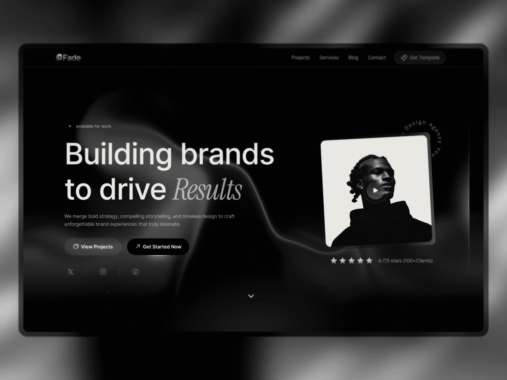
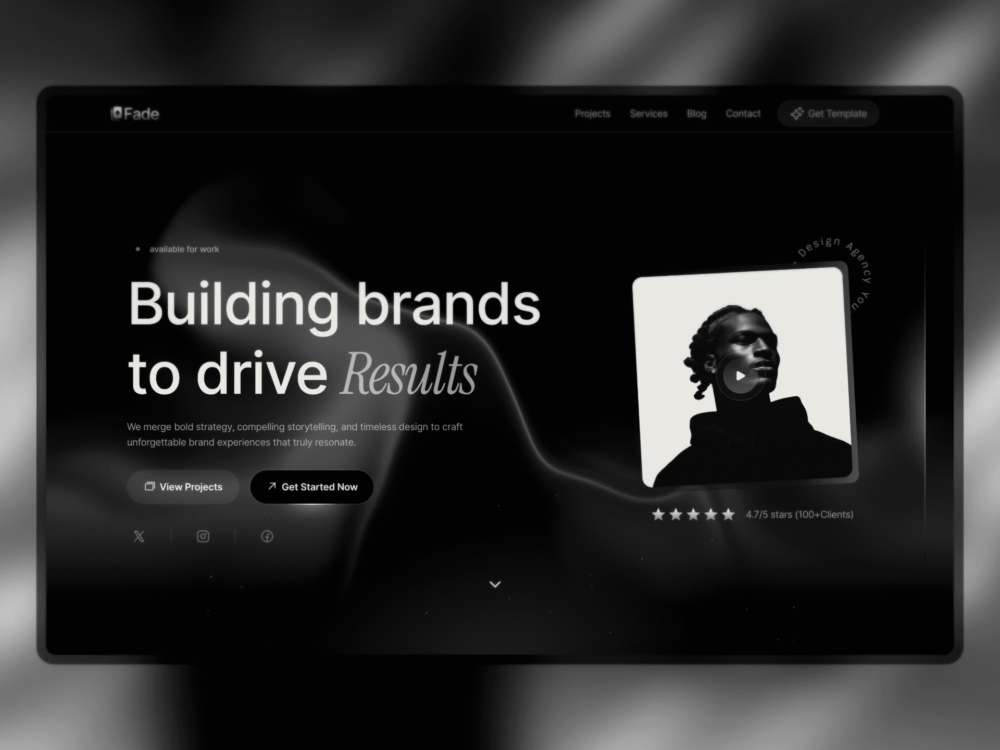
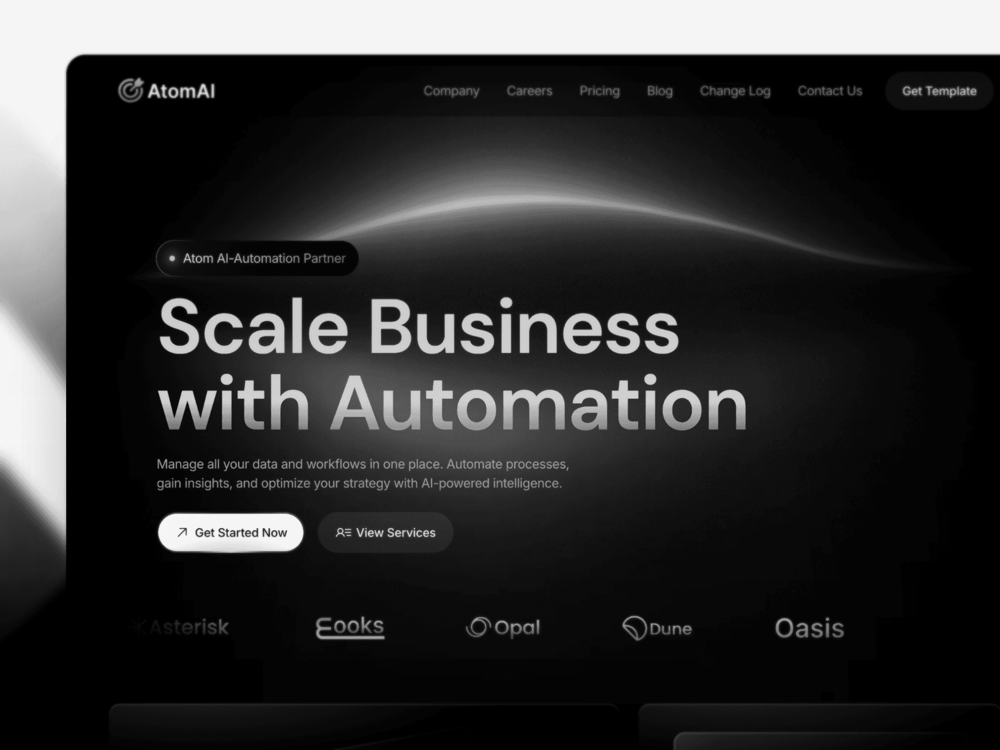

Real-time Object Detection
Deployed YOLOv5 on edge hardware for factory-floor monitoring with streaming video. Reduced false positives by 18% through custom data augmentation and on-device calibration.
 GitHub RepoPassionate AI/ML engineer and data scientist designing practical machine learning, computer vision, and data platforms that deliver business impact.
I'm an AI/ML engineer and data scientist with a focus on transforming raw data into intelligent products. My work ranges from building real-time computer vision systems to designing end-to-end data science workflows that scale from prototype to production.
Supervised & unsupervised learning, regression and classification, model tuning and evaluation.
Neural networks, CNNs, RNNs, transfer learning, TensorFlow, PyTorch.
Data wrangling, exploratory data analysis, visualization with Pandas, NumPy, Matplotlib.
Image classification, detection, segmentation with OpenCV, YOLO, custom pipelines.
CI/CD, Docker, Kubernetes, cloud (AWS/GCP/Azure), model monitoring, MLflow, Kubeflow.
Recent work that blends applied machine learning with production-ready engineering.
Deployed YOLOv5 on edge hardware for factory-floor monitoring with streaming video. Reduced false positives by 18% through custom data augmentation and on-device calibration.
 GitHub RepoBuilt time-series forecasting models on industrial sensor data to predict equipment failures. Integrated MQTT messaging for live alerts and a monitoring dashboard for operators.
GitHub RepoSelected explorations and kernels demonstrating feature engineering, modeling, and storytelling.
Classic survival analysis with feature engineering, logistic regression, and ensemble modeling to optimize ROC-AUC.
View on KaggleConstructed stacking models using XGBoost and Lasso, uncovering neighborhood and quality signals that drive price predictions.
 View on KaggleAcademic publications and long-form articles on machine learning systems.
Presented at IEEE ICMLC 2023. Introduces a compact CNN optimizing inference on constrained hardware for surface anomaly detection.
Read PublicationBlog post explaining a hybrid sequence modeling approach that applies attention to long-horizon financial data.
Read ArticleFormal credentials backing hands-on experience with deep learning and applied ML.
Comprehensive training in neural networks, sequence models, and ML strategies taught by Andrew Ng.
Verify CertificateCredentialed for building, training, and deploying TensorFlow models for production pipelines.
Verify CertificateInterested in collaborations, speaking, or consulting? Reach out and I’ll respond within two business days.
Model design, evaluation, and deployment workflows.
Data audits, experimentation plans, and analytics dashboards.
Email: sangquang2904@gmail.com
LinkedIn: linkedin.com/in/nguyễn-quang-sang-068784218
GitHub: github.com/NguyenQS504092s